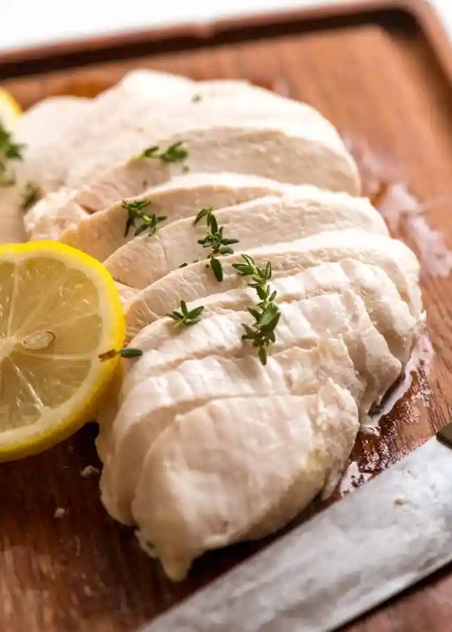

Poached chicken

Description
I feel like poached chicken is a life skill that everyone should know. But depending how it’s executed, on the one hand it can be like chewing on chipboard: dismally dry, impossible to swallow and completely flavourless.
On the other hand – the successful hand – it’s unbelievably succulent, with chicken flavour you never dreamt was possible, and so tender and juicy you can literally SEE the chicken juices sparkling on the surface of every slice.
Ingredients
- 2 chicken breasts , boneless skinless, 250g/8.5 oz each
- 1 lemon , quartered
- 1 bay leaf , dried or fresh
- 2 garlic cloves , minced
Steps
- Take chicken out of the fridge 30 minutes before cooking.
- Fill a saucepan with water so the chicken breast will be well submerged with at least 2" / 5cm of water above it in a single layer (can be snug but do not stack).
- Add Flavourings, if using (squeeze in lemon juice, add used lemon).
- Bring water to boil.
- Place chicken breast in water, place lid on, bring back up to the boil. IMMEDIATELY remove saucepan from stove and set aside for 20 minutes (it's fine up to 45 min to 1 hr, won't overcook).
- Remove chicken from water. Slice and be amazed how perfectly juicy and tender the breast is!! Or chop/shred and use as desired.
- If reserving for later use, cover loosely to cool then refrigerate whole.